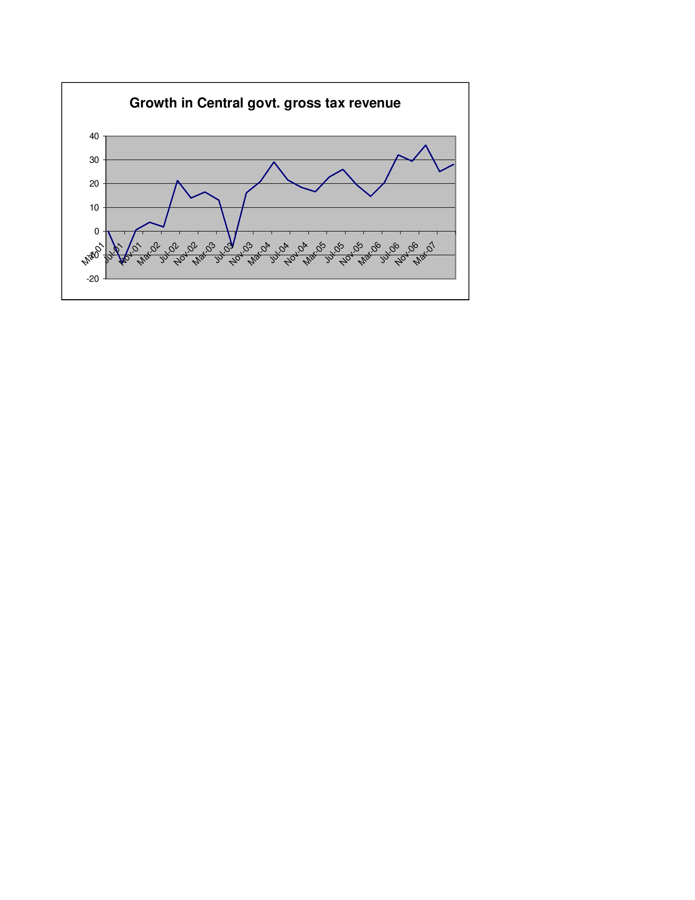
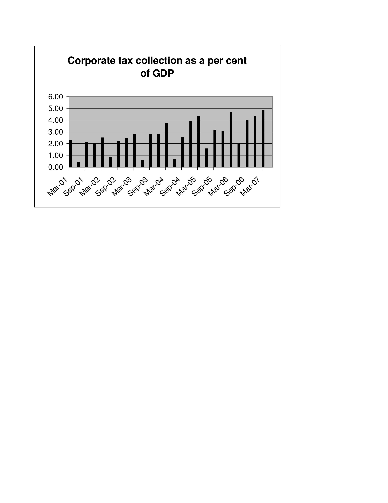

Taxing times, good times
Indian Express, 29 August 2007
 There has been an impressive growth in gross tax revenue collections of the central government in recent years. As Figure 1 shows growth rate of gross tax revenue collections of the central government is now touching 30 percent. This is nearly double the rate of growth in nominal GDP in recent years. We, therefore, see an impressive increase in the tax to GDP ratio. The ratio rose from 11 percent in March 2002 to 16 percent in March 2007.
There have been a number of factors responsible for improvement in tax collections. These include the reduction in tax rates, the improvement in tax administration and the increase in the tax base such as the inclusion of services. India witnessed a reduction in custom duties, high import growth and a high growth in custom duties in the last 6 years.
Direct tax collections have increased sharply. The sharp growth in direct tax revenue of 44 percent in the current financial year till mid-August was the cumulative result of improvements in tax administration and rationalisation of tax policy. Corporate tax collections grew by 52 percent. The growth in corporate taxes has been much faster than the growth in GDP. As a consequence, the share of corporate tax collections as a percentage of GDP has increased sharply.
 Figure 2 shows the increase in the corporte tax to GDP ratio. It shows that since 2001 corporate tax as a share of GDP has more than doubled from just above 2 per cent to nearly 5 per cent. Part of the story might be the upswing in the economy. Profits and corporate taxes often increase by more than the increase in output. In other words, high GDP growth results in profits and corporate taxes increasing at rates faster than the growth in GDP. In addition to the rationalisation of taxes, the high buoyancy of corporte taxes has helped in pushing up the ratio of corporate tax collections to GDP.
Income tax as a percent of GDP has risen from about 1.5 percent in 2001 and 2002 to about 2 percent in 2007. This improvement is also both due to a rationalisation of income taxes -- changes in tax slabs, reduction in rates, changes in tax exemptions for savings and improvement in the tax administration. The Fringe Benefit Tax was aimed at reducing some of the loop-holes in the tax system that were being utilised by private companies to give perks or tax free income to employees. The FBT might have played some role in reducing the evasion and increasing personal tax collections.
An important factor in the new tax administration has been computerisation through the TIN. The improvement in tax adminstration through the Tax Information Network (TIN), that reduced the scope of evasion and improved information related to tax deduction at source (TDS) was an essential part of the reform in the tax regime. It has been instrumental in making employers and tax payers provide correct data about TDS. Paper based TDS certificates that could not be cross verified had created a network of corruption that the tax administration was unable to deal with. Truck loads of paper certificates would fill income tax ware houses and never be examined. The computer based system in which TDS information can be cross-checked has removed this source of tax evastion.
Back up to Ila Patnaik's media page
Back up to Ila Patnaik's home page